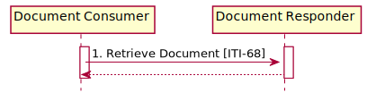

MHD Sushi Implementation Guide
0.1.0 - CI Build
MHD Sushi Implementation Guide
0.1.0 - CI Build
MHD Sushi Implementation Guide, published by IHE. This is not an authorized publication; it is the continuous build for version 0.1.0). This version is based on the current content of https://github.com/JohnMoehrke/MHD-fsh/ and changes regularly. See the Directory of published versions
This section corresponds to transaction [ITI-68] of the IHE Technical Framework. Transaction [ITI-68] is used by the Document Consumer and Document Responder Actors.
The Retrieve Document [ITI-68] transaction is used by the Document Consumer to retrieve a document from the Document Responder.
| Actor | Role |
|---|---|
| Document Consumer | Requests a document from the Document Responder |
| Document Responder | Serves the document to the Document Consumer |
| Standard | Name |
|---|---|
| FHIR-R4 | HL7 FHIR Release 4.0 |

Figure: Retrieve Document Interactions
This message is an HTTP GET request to retrieve the document.
The Document Consumer wants to obtain a document.
The Document Consumer sends a HTTP GET request to the server. The Document Consumer request may be to retrieve the document content referenced by a DocumentReference.content.attachment.url.
The Document Consumer may provide a HTTP Accept header, according to the semantics of the HTTP protocols (see RFC2616, Section 14.1). The only MIME type assured to be returned is the MIME type indicated in the DocumentReference.content.attachment.contentType.
The HTTP If-Unmodified-Since header shall not be included in the GET request.
The Document Responder shall provide the document in the requested MIME type or reply with an HTTP status code indicating the error condition. The Document Responder is not required to transform the document.
This is the return message sent by the Document Responder.
The HTTP Response message is sent upon completion of the Retrieve Document Request.
This message shall be an HTTP Response, as specified by RFC2616. When the requested document is returned, the Document Responder shall respond with HTTP Status Code 200. The HTTP message-body shall be the content of the requested document.
Table 3.68.4.2.2-1 contains error situations and the HTTP Response.
Table 3.68.4.2.2-1: HTTP Error Response Codes and Suggested Text
| Situation | HTTP Response |
|---|---|
| URI not known | 404 Document Not Found |
| Document is Deprecated or not available | 410 Gone (or 404 when 410 is unacceptable due to security/privacy policy) |
| Document Responder unable to format document in content types listed the ‘Accept’ field | 406 Not Acceptable |
| HTTP request specified is otherwise not a legal value | 403 Forbidden/Request Type Not Supported |
The Document Responder may return other HTTP Status Codes. Guidance on handling Access Denied related to use of 200, 403 and 404 can be found in ITI TF-2x: Appendix Z.7.
The Document Responder should complement the returned error code with a human readable description of the error condition.
The Document Responder may return HTTP redirect responses (responses with HTTP Status Codes 301, 302, 303 or 307) in response to a request. See RFC7231 Section 6.4 Redirection 3xx.
If the Document Responder returns an HTTP redirect response (HTTP status codes 301, 302, 303, or 307), the Document Consumer shall follow the redirect, but may stop processing if it detects a loop. See RFC7231 Section 6.4 Redirection 3xx.
The Document Consumer processes the results according to application-defined rules.
Document Responders implementing this transaction shall provide a CapabilityStatement Resource as described in ITI TF-2x: Appendix Z.3 indicating the transaction has been implemented.
See MHD Security Considerations
This transaction should not return information that the Document Consumer is not authorized to access.
The security audit criteria are similar to those for the Retrieve Document Set-b [ITI-43] transaction. Grouping a Document Consumer or Document Responder with an ATNA Secure Node or Secure Application is recommended, but not mandated.
The Document Consumer when grouped with ATNA Secure Node or Secure Application actor shall be able to record a Retrieve Document Consumer Audit Event Log. Audit Example for a Retrieve Document transaction from consumer perspective
The Document Responder when grouped with ATNA Secure Node or Secure Application actor shall be able to record a Retrieve Document Responder Audit Event Log. Audit Example for a Find Documet Lists Transaction from responder perspective
IG © 2020+ IHE. Package IHE.ITI.MHD#0.1.0 based on FHIR 4.0.1. Generated 2020-05-03
Links: Table of Contents |
QA Report |
Version History  |
|
 |
Propose a change
|
Propose a change